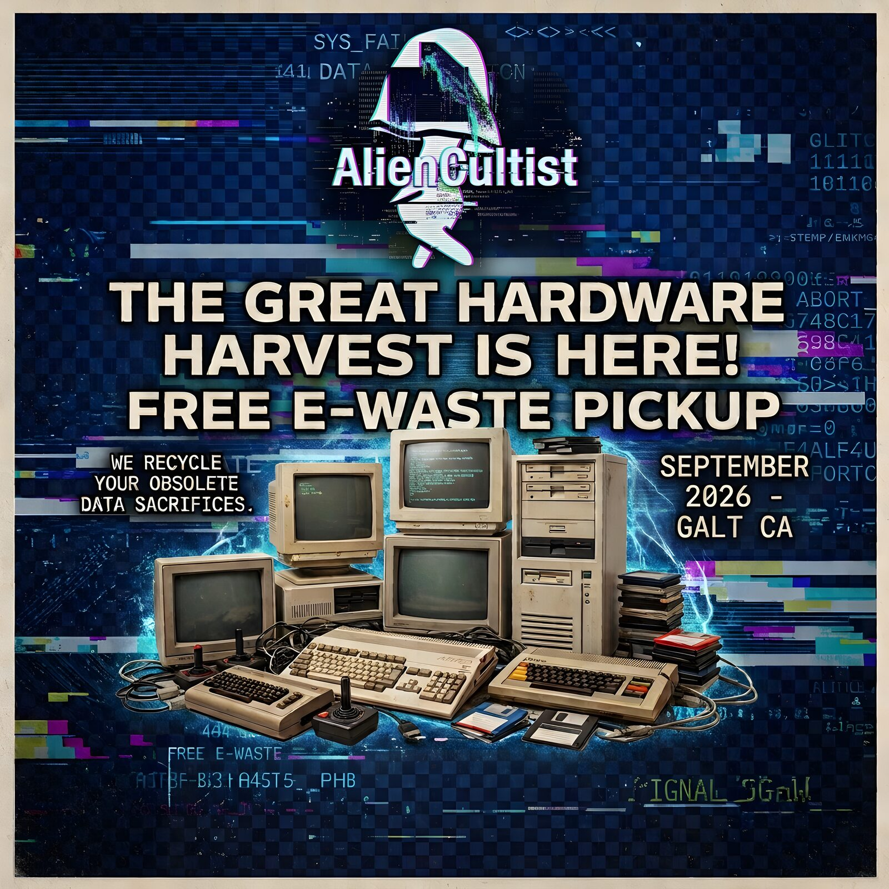
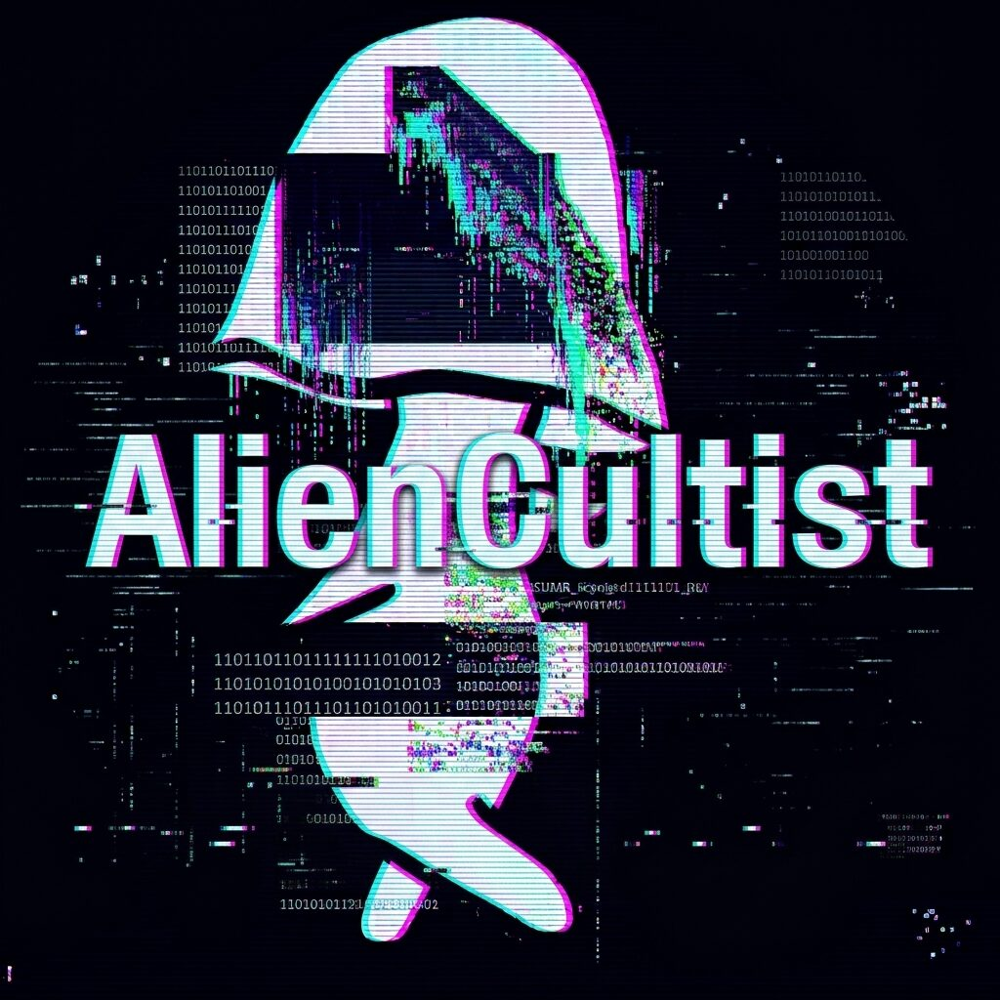

PROC_01 // OPTICAL MEDIA
Disc restoration
Scratched CDs, DVDs, and game discs get cleaned, polished, and repaired. Most discs that skip or won't load can be brought back.
From $100 for up to 75 discs
SEE DISC PRICING →[ ARCHIVE RECOVERY DIVISION ]
We rescue the good stuff from dead formats, tired hardware, and the bottom of the junk drawer. Tapes, discs, drives, whole machines — if it still holds something worth keeping, we'll come and collect it.
[ AVAILABLE PROTOCOLS ]
Old formats, new life. Here's what we handle most — if your project isn't on the list, ask anyway. Prices are on the rate card.
PROC_01 // OPTICAL MEDIA
Scratched CDs, DVDs, and game discs get cleaned, polished, and repaired. Most discs that skip or won't load can be brought back.
From $100 for up to 75 discs
SEE DISC PRICING →PROC_02 // MAGNETIC MEDIA
Home movies and old recordings turned into files you can actually watch and share. We collect the tapes and bring everything back to you.
From $50 for up to 25 tapes
SEE TAPE PRICING →
PROC_03 // HARDWARE RECOVERY
Old computers and parts deserve a dignified exit. We'll collect qualifying gear in and around Galt, free of charge.
Free for qualifying hardware
SEE WHAT WE TAKE →
[ ABOUT THE OPERATOR ]
Alien Cultist Labs is an independent preservation and repair shop in Galt, California. We think the things people made, recorded, and played are worth keeping around — so we keep them around.
[ OPEN CHANNEL ]
Tell us what you've got, what you need, and where you are. We'll come back with a real answer — what's possible, what it takes, and what it costs.
PRIMARY COMMS
(279) 977-2898Call or text — or message AlienCultist on Facebook if that's easier.
We work locally and come to you — there's no shop to walk into, and no set hours. We pick up and drop off around Galt, Lodi, Elk Grove, and Sacramento. Message any time and we'll get back to you.
SEND A TEXT → CONNECT ON FACEBOOK →